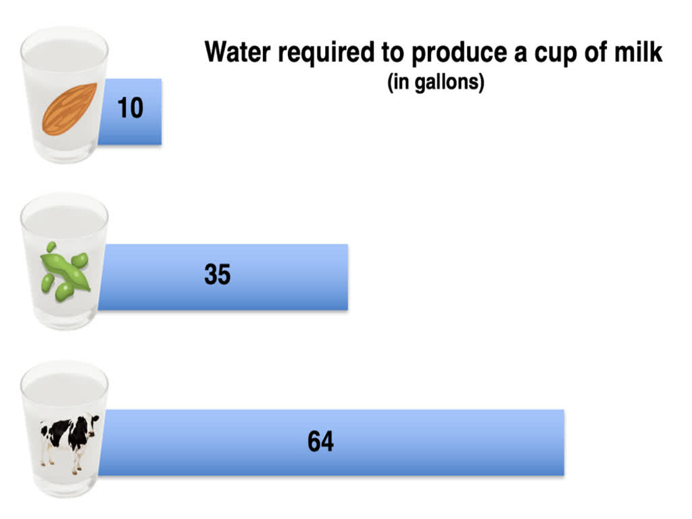
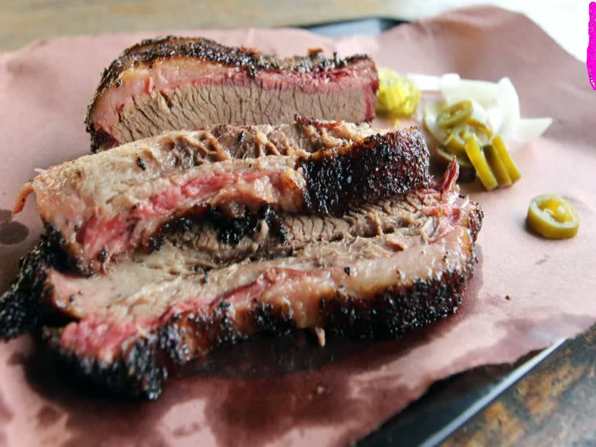

Though the social fabrics causing the problem of climate change are complex, there are a few things that need to be talked about. First, the emissions of greenhouse gases is a large problem. Here are the biggest personal causes:
Using excess electricity
Eating meat
Driving long distances
Overeating
It is not too late to help stop the global warming, so these items above show what we can do as a society to tackle this issue. For example, even without government intervention, corporations are creating energy efficient devices because, they too care about it because it also threatens their survival further into the future. People are learning about the seriousness of the issue, and as I said earlier, people are working to solve the issue.
Using excess electricity
People's devices use excess energy. The excess electricity used comes from the Internet usage as well. According to this image, a large e-mail attachment can use 50 grams of CO2. So, this means, on average, 1 gigabyte of data may use up to 4.4 pounds or 2 kilograms of data. This may be lower due to increased environmental care. Here are some suggestions on lowering electricity consumption:
Unplug outlets for things that don't need to be plugged in. This uses "vampire power" and can generally be easily stopped.
Lower the quality for YouTube videos from 720p to 480p. This will make the energy required to send the data less.
Take shorter showers. This reduces the water heater's electricity or gas consumption.
Lower the heat temperature and raise the AC temperature to reduce load on the AC and heat devices.
Reduce your phone usage by as much as you feel comfortable.
Eating meat

The farming of cattle is very intensive on methane emissions and is even more intense on water usage. The image above shows the amount of CO2 required to produce each type of milk. Despite the fact that almonds use a lot of water, the effect is cancelled out by the relatively few almonds (this number is estimated to be ~2-5 for popular brands) used by popular brands.

Back to the actual meat, meat is very water intensive. The water is not mainly from the cows and other animals, but from the land that is used to grow the crops. Plus, the land to grow the food is usually on deforested land or in very rural areas where there is not a lot of people which makes the farming easier because farming is usually done on large spaces. According to this image, cows use 86% of agricultural biomass (some of which is potentially food) but only give 8% of food that humans eat.
In order to help, you don't even have to stop eating meat! You can just start eating chicken. For example, I try not to eat beef as much because of the cholestrol and the CO2 levels shown above. According to an image source from CNN, (no endorsement of CNN intended) eating chicken uses roughly 90% less CO2 than the same amount of beef. This is because chickens are birds and birds process grains more efficiently.
Dietary Carbon Footprint
Although this is not the central topic of this site, the number of calories the average American eats may be surprising, considering the fact that the USDA recommends an average of 2,100 calories per day. It is 3,600 in just one day! This is not really about the obesity part of it, though this is also a significant concern. The concern, for this project, is the food hogging of Americans. What I mean by "hogging" is the excessive ingestion of food. Although this underestimates the disparity because of America's food being more animal based than the country that is being compared to (India), it is a good comparison of the per capita consumption. The Indian diet, which consists of both meat and plant sources of energy, is healthier and influenced by the predominant religion: Hinduism.
Putting aside India, we are going to talk about the carbon footprint of the American diets combined. Using the 10 calories in and 1 calorie out rule, we can deduce that the average American uses 36,000 calories per day. This translates to 4,000 grams of oil and this means 3.27 pounds of CO2 for 1 kilogram. Multiply this by 4 and you get 13.08. Now, multiply 13.08 times the adult population of 250 million of the US. This shows that we emit 3.27 billion tons of CO2 from food alone. It is important to know that this is not the most reliable calculation because it may slightly underestimate or overestimate calories required to make food.